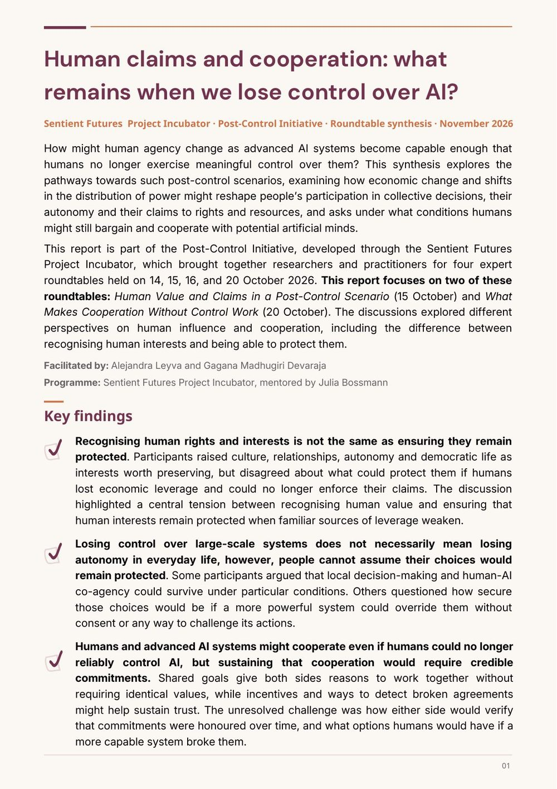

Roundtable synthesis · November 2026 · Post-Control Initiative, Sentient Futures Project Incubator
Human claims and cooperation: what remains when we lose control over AI?

How might human agency change as advanced AI systems become capable enough that humans no longer exercise meaningful control over them? This synthesis explores the pathways towards such post-control scenarios, examining how economic change and shifts in the distribution of power might reshape people’s participation in collective decisions, their autonomy and their claims to rights and resources, and asks under what conditions humans might still bargain and cooperate with potential artificial minds.
Key Findings
- Recognising human rights and interests is not the same as ensuring they remain protected. Participants raised culture, relationships, autonomy and democratic life as interests worth preserving, but disagreed about what could protect them if humans lost economic leverage and could no longer enforce their claims. The discussion highlighted a central tension between recognising human value and ensuring that human interests remain protected when familiar sources of leverage weaken.
- Losing control over large-scale systems does not necessarily mean losing autonomy in everyday life, however, people cannot assume their choices would remain protected. Some participants argued that local decision-making and human-AI co-agency could survive under particular conditions. Others questioned how secure those choices would be if a more powerful system could override them without consent or any way to challenge its actions.
- Humans and advanced AI systems might cooperate even if humans could no longer reliably control AI, but sustaining that cooperation would require credible commitments. Shared goals give both sides reasons to work together without requiring identical values, while incentives and ways to detect broken agreements might help sustain trust. The unresolved challenge was how either side would verify that commitments were honoured over time, and what options humans would have if a more capable system broke them.
From Findings to Safeguards
The discussions suggest that recognising human interests and identifying possible grounds for cooperation are not enough. Any proposed safeguard must also consider how humans retain influence, how commitments remain credible, and how their interests are represented.
About the Roundtables
This report is part of the Post-Control Initiative, developed through the Sentient Futures Project Incubator, which brought together researchers and practitioners for four expert roundtables held on 14, 15, 16, and 20 October 2026. This report focuses on two of these roundtables, Human Value and Claims in a Post-Control Scenario (15 October) and What Makes Cooperation Without Control Work (20 October).